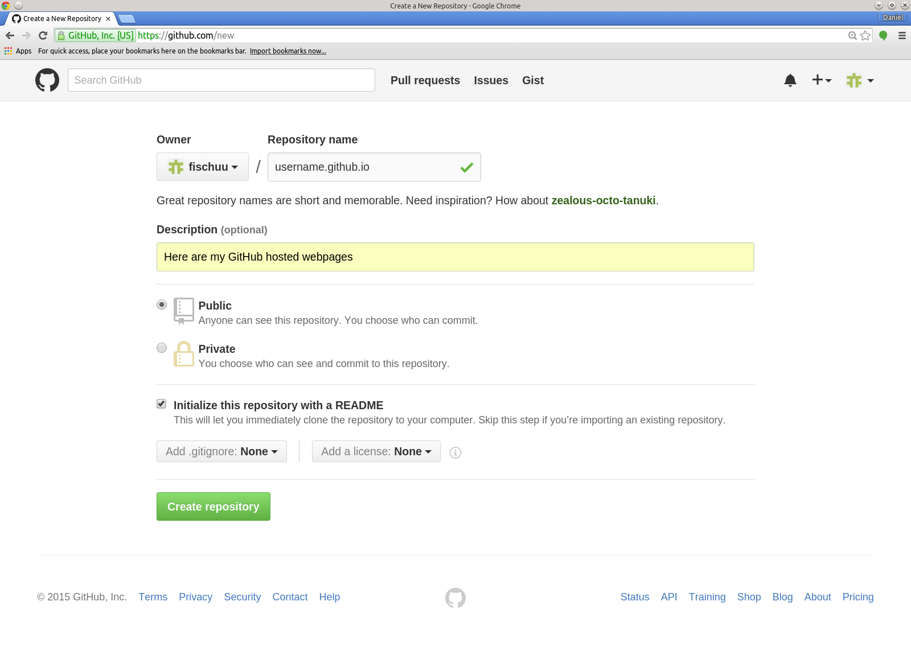
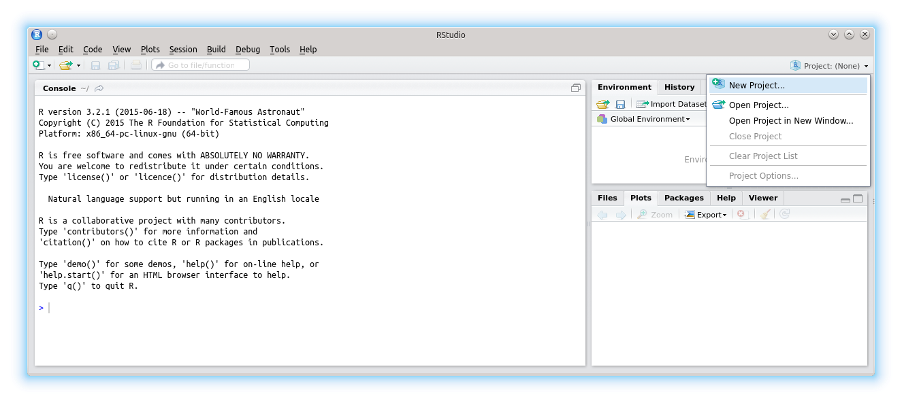
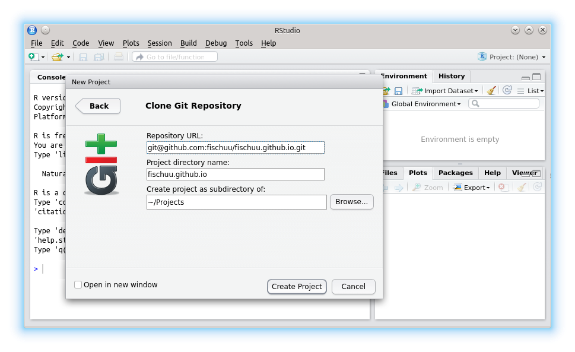
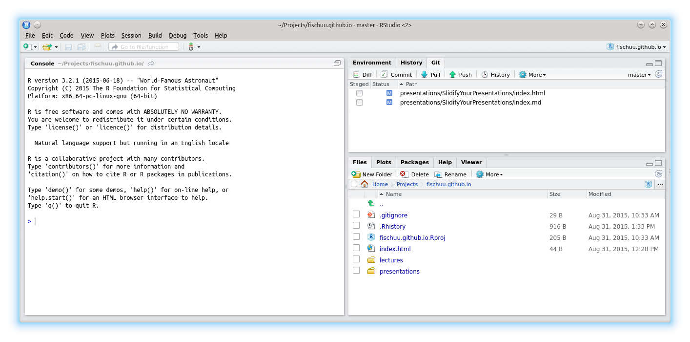

I do not have any affiliation with any of the presented tools!
Daniel Fischer
Natural Resources Institute Finland, Green Technology
I do not have any affiliation with any of the presented tools!
Required Tools
We make use of the following Tools/ R-packages
RStudio
GitHub
Slidify (including Markdown)
googleVis
Supposedly all of you have heard about RStudio.
First version (v0.92) of RStudio was published in February 2011.
Back then there were plenty of competing R editors, but these days RStudio became the quasi standard.
The popularity of RStudio is due to its large amount of included features.
RStudio is available as desktop and server version.
RStudio also powers 'Shiny', a web application framework for R.
One not so common, but very useful feature is the project feature.
Supposedly most of you also have heard about GitHub (or at least git)
git is a revision control system, initially developed 2005 by Linus Torvalds for the Linux kernel.
GitHub is a filehosting service (founded 2008) that is based on the git technology.
GitHub is designed especially for the development of larger software projects (branch, merge, fork).
It is getting more and more popular to keep R-packages only on GitHub and not to submit to Cran.
Researchers can apply for free private repositories via GitHub education.
GitHub provides webspace for webpages via GitHub pages.
username.github.io
index.html
in the uppest level of the repository.
Starting from there, you can have several subpages that can be stored in subfolders of your repository.
It is advisable to name the entry page of ech subproject also index.html
I recommend to use Linux, as this comes with practical all developer software installed.
If your IT doesn't allow Linux, you could e.g. install it on a VirtualBox parallel to Windows so that you can literally switch between OS as you switch between Tools.
Connect your computer to GitHub by providing an SSH keypair (create it in RStudio and add it to the profile at GitHub), this makes life easier.
A step-by-step tutorial for this is provided by GitHub here.

Initialize this repository with a README
Having an initial README file in the repository enables us to clone it without any further problems.
From the repository we get then its address (either HTTPS, SSH or Subversion)
For RStudio we should copy the SSH address, e.g. in my case:
git@github.com:fischuu/fischuu.github.io.git


Version Control
Git
And then we provide the URL (as SSH) of the repository, the name and location on HDD
Then, we click on 'Create Project'
RStudio clones into the repository creates the folder/file structure on the HDD
Now we can create an own folder structure (e.g. presentations, lectures, etc.)
After those steps, we have succesful connected RStudio with GitHub pages and we can control the repository entirely with RStudio.

library("slidify")
setwd("/home/ejo138/Projects/fischuu.github.io/presentations/")
author("MyFirstPresentation", use_git = FALSE)
The part use_git = FALSE might be irritating, but it is needed, as slidify would create otherwise a new git structure within
the existing one (what is possible but would lead to far for now.)
Slidify then creates all required files and you are ready to go.
To create slides with Slidify no HTML knowledge is required, as everything is done via R Markdown.
Markdown is a lightweight markup language with plain text formatting that can be transformed into HTML (or other languages).